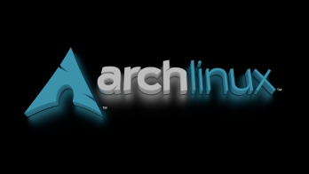

Zde je první odstavec
Druhý odstavec. Zde navíc máme odřádkování pomocí br.
A třetí odstavec. A věta v něm.
Pomocí tagu STRONG mohu psát tučně
Pomocí tagu "em" budeme psát kurzívou
Svůj text si můžete podtrhnout pomocí tagu u
Mám rád tučné zdravé jídlo.
Pokud sděluji něco důležitého tak to žlutě zvýrazním.
Kombinace tagu
